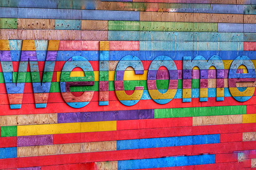
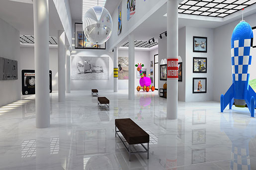
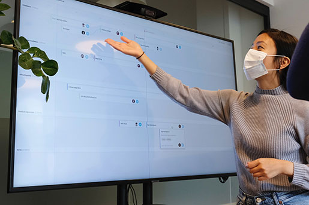
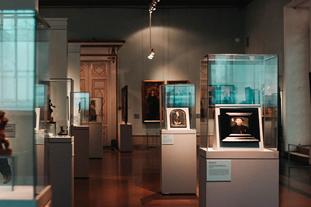
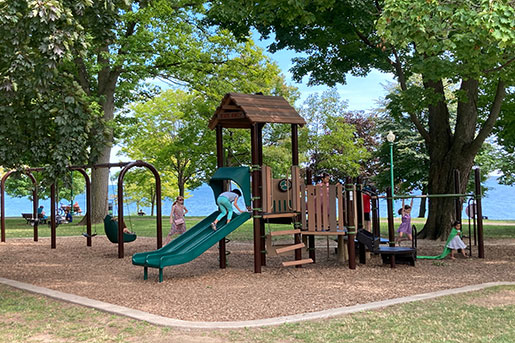
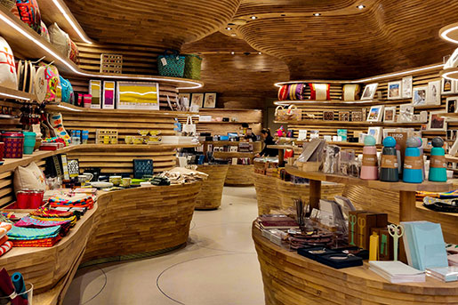
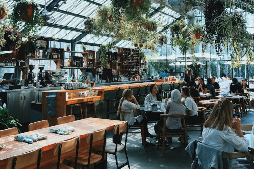
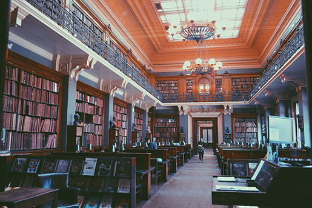

Plan your day
Come join us at the Community Science Museum where we’re committed to making science accessible to all. This means that
we do what we can to provide a good experience for everyone.
The aim of our museum is to create a space where everyone can experience the wonders of our discoveries
and perhaps even ignite a lifelong passion to continue the exploration of the world around us.

We strive to be accessible for everyone!
The museum has wheelchair accessibility ramps. Outside we have handicap parking designated near the entrance for easy
access. The entrance doors, and emergency exits are double doors and easy to open.
We have audio guides available and braille display signs for the visually impaired.
All areas are designed so that there is good space to get around. In times with lots of visitors, it might be a bit crowded. There are
usually fewer visitors during morning hours on the weekdays. On the weekends there are usually more visitors.
If you don't have an assistent with you, contact us in advance and we will arrange for you to have someone
taking care of your when you visit us.
We also welcome babies and their baby-carriages, but if you do have smaller carriages to use at the museum that is very much apprecciated
as the space get crowded when there are a lot of visitors. We have some smaller ones for you to use when you are visiting, but the numbers
are limited.

Where there is possible there is good space to get around with strollers and wheelchairs.
Where to find us
Community Science Museum
Gotaasalleen 6
2050 Jessheim
Norway
Next to the museum there is a bus stop, so it is easy to get here by public transportation.
The museum have good parking space for both bicycles and cars. Big buses and maxi-taxis also have their designated parking area.
OPENING HOURS:
- Monday: closed
- Tue-wed-thu: 10 am - 16 pm
- Friday: 10 am - 19 pm
- Saturday: 9 am - 16 pm
- Sunday: 9 am - 13 pm
FREE ADMISSION
Guided tours kr 70,-/per person
Special Events may have additional costs
Visit Guidelines
We have some guidelines that we want everyone to follow when visiting us. This is to ensure that everyone has a good time and make sure
that no one get's in harms way. Our museum also needs looking after, so please follow our guidelines.
Our guidelines:
- Keep safe distance from artifacts and objects on display - this to avoid harm on either of you
- No running indoors - it is way to easy to bump into other visitors or exhibits
- Children must be kept under watch
- Photography and recording for personal use are allowed unless other stated
- No eating or drinking indoors - we have designated areas for this
- No shouting or loud talking - we have visitors who are sensitive to noise

Guided Tours
There are guided tours of the museum that starts every hour.
Here our experienced guides will take you through our museum and give you indepth knowledge of what you see. These tours
are 70 NOK per person and include a handy printed guide of the museum.
We have guides who know sign language, so if you want to be sure to meet one of them,
contact us to hear when they are available.
Are you a group of people of 6 or more, you can book your own private guided tour. Just contact us and we will
make an appointment.
We have guides that can show you around the museum.

On Your Own
You will find your way around the museum easily on your own. We have maps of all the exhibitions with descriptions on
what you see. You can also download our app and follow along with the digital guided tours there.
We have audio guides and all the exhibits have braille display signs for the visually impaired.
The museum is arranged in a way so that wheelchairs, rollators and baby-carriages are easily manouvered throughout the exhibitions.
You can easily find your way on your own, we have maps and displays which tell you what you see. You can also use audio to guide you
around the museum.

Restrooms and Playgrounds
There are several restrooms which all have a designated place for caring for your baby/toddler, and big handicap toilets
as well.
Outside, there are two different playgrounds if you or your kids need to take a break.
If you need or want a break, we have a playground outside the museum in addition to open gras fields for you to play and rest, even an
outdoor space under roof.

Museum Shop
Our shop offers a range of memorabilia from the museum as well as great gifts and activity packs that allow you to
continue to explore science even after you’ve left the museum.
Visit our museum shop after your visit, you might find something of interest there and at the same time help contribute to the museum's
work.

Food and Drink
There is a café attached to the museum where you can get light lunches, soft drinks, coffee, snacks and more.
If you want to bring your own lunch, you can find seating areas outside of the museum. No food or drinks are allowed inside the museum.
Our café has a wide variety of food and drinks.

Library
The museum is proud to present our library to the public. Here you will find a lot of different books and audio about
science around the world. You can read or listen to the material here at the museum, or you can take it home like in a regularly library.
We are very proud of our library. Here you will find lots of books and audio about science and also other subjects.
Lecture halls
The museum has two lecture halls which we use for special events and when our visiting professors hold their lectures.
Find upcoming events and lectures in the Special Events section.
One of our lecture halls. We have designated space for wheelchairs and strollers and easy access.
Even though we have a lot of interesting things on a daily basis here at the museum, we also have
visiting exhibitions and professors (and other exciting guests) on a regularly basis.
You can read more about upcoming events and lectures in the Special Events section.